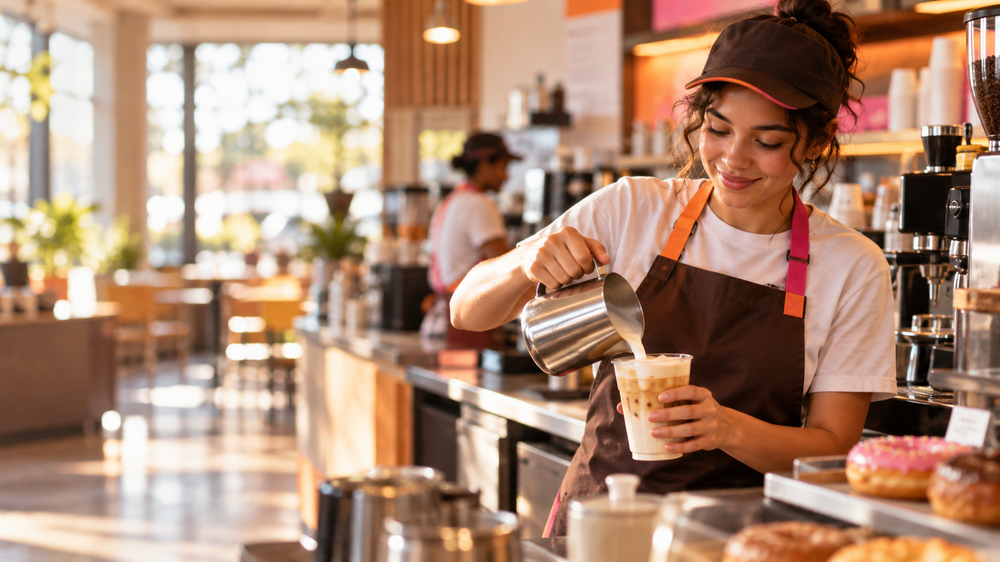

SOMOS Dunkin’

Nuestra historia, 1950
Dunkin abrió sus puertas en Quincy, Massachusetts, con una combinación sencilla que se volvería icónica:
MÁS QUE
DONAS Y CAFÉ
Un nuevo capítulo comienza...
2025

¿Quieres ser parte
de lo que sigue?
La historia de Dunkin sigue creciendo.
Y tú también puedes formar parte de ella.
